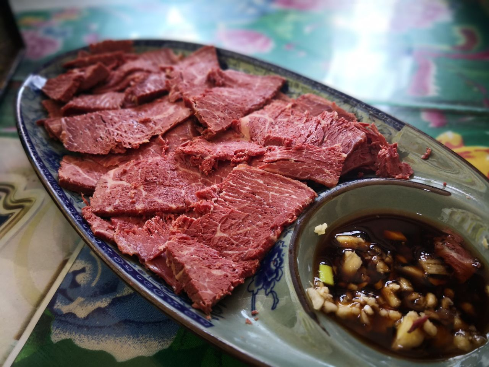
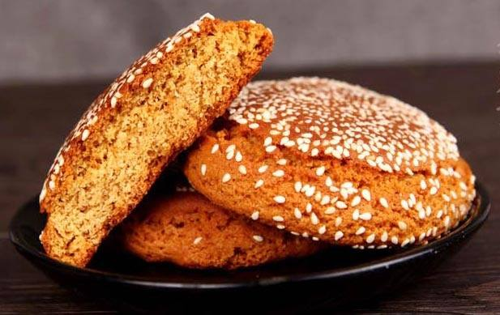
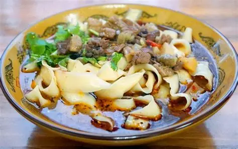

Tender, fragrant, and traditionally processed. It’s one of Jinzhong’s most famous specialties with a history of hundreds of years.

Sweet, soft, and fragrant traditional pastry covered with sesame seeds, a well-known Shanxi snack loved by all ages.

Hand-sliced noodles with chewy texture, served in savory broth with various toppings, a classic staple of northern Chinese cuisine.